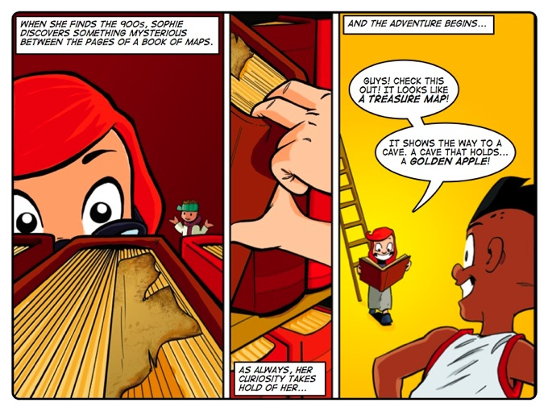

Why
stories?
Most authentic (and effective)
learning takes place through immitation or mimicry. This is
how an infant learns to walk and talk. She imitates the
sounds and actions of the adults around her, and
incrementally fine-tunes her early efforts
so that they more and more closely match what she hears and
sees in others. It is not simply the case that she does
immitate, but that she desperately wants to mimic what she
hears and sees. As Robert Fulghum said, “Don’t worry that
children never listen to you. Worry that they are always
watching you.”
But imitation isn't always beneficial. If you grow up in an
authoritarian environment where obedient behaviour is
prized over independent and original thinking, you are less
likely to develop a mindset comprising analytical, critical
and creative thinking skills than if you grow up in an
environment supportive of independent and original
thinking. The typical behaviours of the adults and peers in
the environment build a mental framework in the young which
anchors their expectations and actions. If you're
surrounded by a culture of reading, learning and
contemplation, then these become second nature. The
question, then, is how to provide learners with a model of
such a culture?
Many religions use parables as a means of role-modelling
behaviour. Some philosophers (such as Tolstoy, Sartre,
Nietzsche, Goethe and Rand) have used fiction to provide
role models of virtuous and villainous characters. And many
popular novelists and graphic novelists have created
characters who are role models of courage, daring, virtue
and other positive traits. Young children reading Tintin or
Harry Potter, for instance, identify with the characters
and want to be like them.
For these reasons our characters model key analytical,
critical and creative thinking skills and dispositions in
the context of comics. These illustrated stories allow
learners to observe and experience a culture of thinking
and science. Since the characters in the story are the same
age as their readers, learners can see the characters as
their peers.

Stories
"The mind is not a vessel to be filled but a fire to be kindled."Plutarch
Except where otherwise noted, content released under a Creative Commons Attribution-Noncommercial-Share Alike 3.0 License.